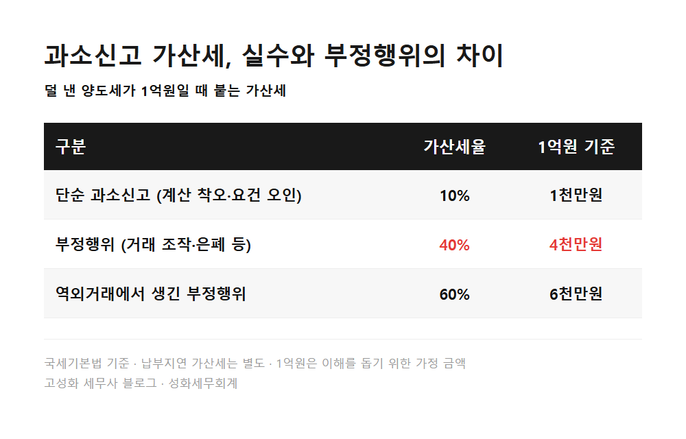
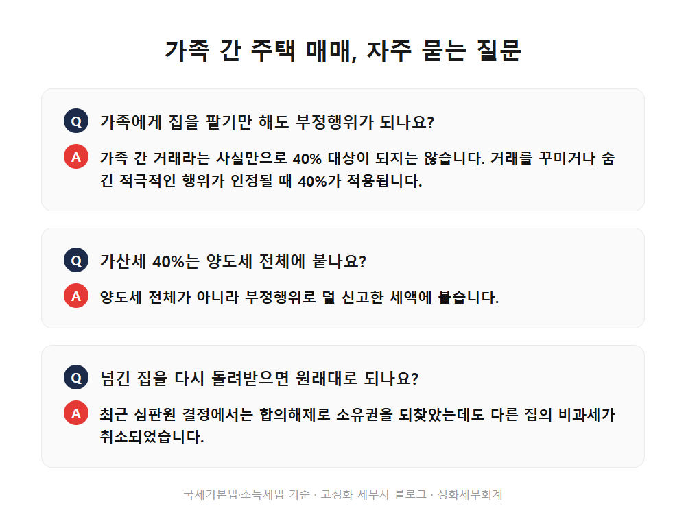

← 세무칼럼 목록
부동산·상속·증여


가족간 주택매매 1주택 비과세, 가산세 40% 붙는 경우
가족에게 집을 파는 것 자체는 세법이 막고 있지 않습니다.
다만 대금이 실제로 오가지 않았거나 그 돈이 결국 판 사람 돈이었다면, 세무서는 가족 간 매매가 없었던 것으로 봅니다.
가족 간 매매가 없었던 것으로 판단되면, 그 매매를 전제로 받은 1세대 1주택 비과세가 취소될 수 있습니다.
그 매매가 꾸며낸 거래로 인정되면, 덜 낸 양도세에 가산세 40%가 붙습니다.
이 글에서 다루는 내용
- 가족 간 매매라면 대금이 실제로 오갔는지부터 확인하셔야 합니다
- 삼촌과 조카 사이 주택 매매, 조세심판원은 어떻게 봤나
- 과소신고 가산세 10%와 40%, 실수인지 조작인지로 나뉩니다
- 가족에게 집을 판다면 미리 체크할 기록
한눈에 보기


자주 묻는 질문
가족에게 집을 팔기만 해도 부정행위가 되나요?
가족 간 거래라는 사실만으로 가산세 40% 대상이 되지는 않습니다.
가산세 40%는 양도세 전체에 붙나요?
가산세 40%는 양도세 전체가 아니라 부정행위로 덜 신고한 세액에 붙습니다.
가족에게 넘긴 집을 다시 돌려받으면 원래대로 되나요?
삼촌과 조카 사례에서는 합의해제로 소유권을 되찾았는데도 다른 집의 비과세가 취소되었습니다.
정리하면
가족에게 집을 파는 것은 세법상 문제가 없습니다.
가족 간 매매에서 세무서가 보는 것은 대금이 실제로 오갔는지, 그리고 그 돈이 산 사람 돈인지입니다.
매매가 꾸며낸 거래로 인정되면 그 매매를 전제로 받은 1세대 1주택 비과세가 취소되고, 덜 낸 세액에 가산세 40%가 붙습니다.
가족 간 매매가 정상 거래로 인정되는지는 계약서보다 통장 기록과 자금 출처를 같이 놓고 봐야 알 수 있습니다.
가족 간 주택 매매 전에 자금 흐름 정리가 필요하시면 상담신청 해주세요.
본문 전체와 근거 조문은 블로그에서 확인하실 수 있습니다.